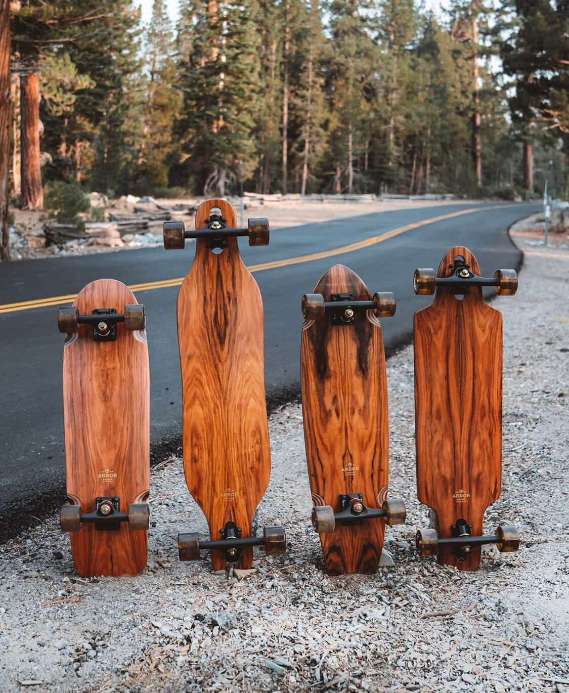
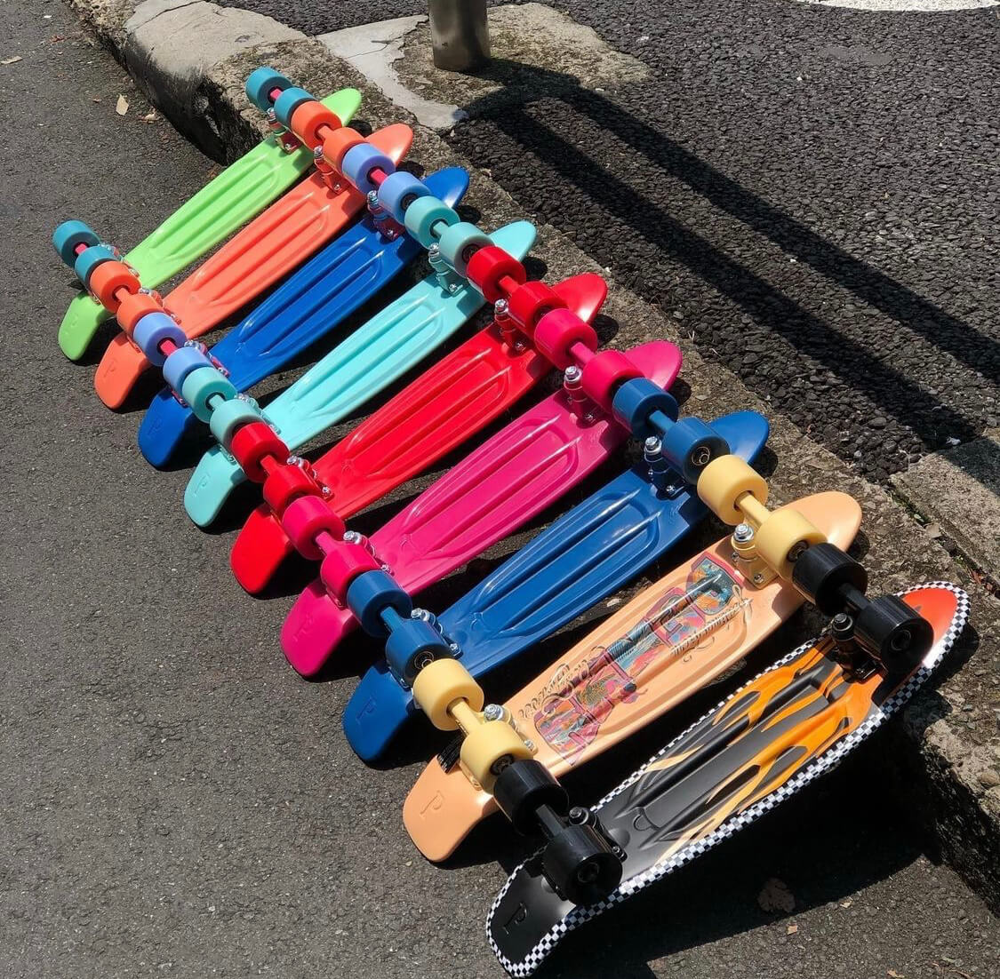

Трюковый скейт
Трюковый скейт – это классика. Он подойдет и новичку, и опытному райдеру. На классическом скейтборде можно выполнять трюки, прыжки, кататься на ровной и изогнутой поверхности с хорошим покрытием. Он не предназначен для длинных дистанций, большой скорости и тротуаров с трещинами и неровностями. Отличительные особенности трюкового скейта – конкейв, узкая и жесткая подвеска, небольшие колеса с минимальной амортизацией. Длина деки – 73-85 см, ширина – 18-23 см. Лучшая классика изготовлена из тонких склеенных между собой пластинок древесины канадского клена.
Лонгборд
 Длинный и устойчивый лонгборд способен развить большую скорость. Такой вид скейта не совсем удобен в условиях города, он тяжелый и громоздкий. На нем крайне сложно выполнять трюки, зато можно быстро съехать по склону. Хотя среди современных лонгбордов есть и особые, предназначенные для фристайла и танца. Они имеют конкейв и более мягкую подвеску. Лонгборд легко узнать по широкой и длинной (от 83 до 120 см) доске, мягким и большим колесам. Подобная конструкция позволяет развивать огромную скорость во время езды по горному серпантину. Опытные спортсмены разгоняются до 100 км\ч! При таком разгоне райдеру требуется профессиональная защита. Из-за большого размера лонгборд часто выбирают новички. На нем легко удерживать баланс, но нужно помнить, что большое расстояние между подвесками не позволит сделать поворот с маленьким радиусом. Круизер Компактный маневренный круизер – лучший вид скейта для катания по городу. На нем можно маневрировать среди людей, большие и мягкие колеса обеспечивают комфортную езду по неровному асфальту. Внешне круизер похож на лонгборд, но имеет ровную носовую часть, смещенные вперед колеса, и он гораздо меньше. Ширина скейтборда-круизера – от 18 до 23 см, длина – от 62 до 89 см. Благодаря небольшим размерам его удобно брать с собой, ездить с ним в общественном транспорте, хранить в квартире. Эта модель подходит как новичкам, так и мастерам.
Пенниборд
 Пенни скейтборд, он же пенни борд, пластборд – это уменьшенный круизер. Он изготовлен из прочного пластика, подходит для райдеров любого уровня и особенно популярен среди детей. Пенни легкий и маленький, его длина не превышает 68 см. Скейтборд с декой 54 см ценится за маневренность, но начинающим он, скорее всего, покажется неустойчивым, поэтому лучше предпочесть модели чуть большего размера. Практически в любом магазине спорттоваров представлены пенниборды разных расцветок, есть даже со светящимися колесами. Яркий дизайн и компактность делают этот вид скейта лучшим для детей. Пластборд – это не трюковая модель, она создана для езды по городу. Качественный пенни имеет полиуретановые колеса и достаточно мягкую деку, которая прогибается под весом стоящего на ней человека.